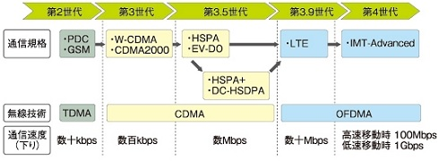
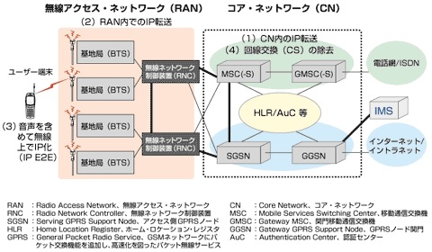
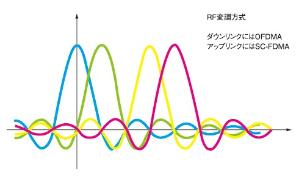
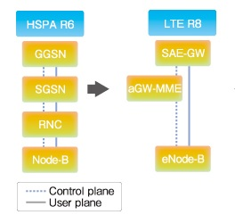
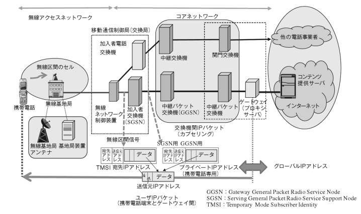
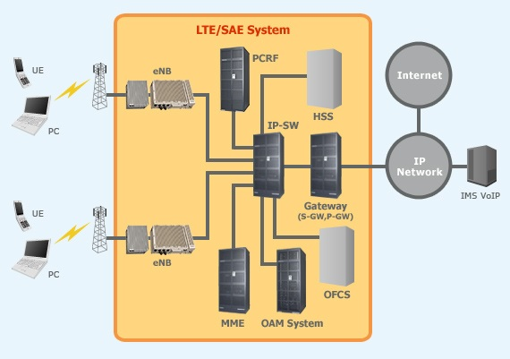

| TOP | weblog | TIPS | Works | リンク |
| 2013-03-20 LTEってなに？ 「LTE」はLong Term Evolution（ロング・ターム・エボリューション）の略称です。 一方「３G」はスリー・ジェネレーション「第３世代」のことです。 「世代」「規格」「無線技術」を並べると下図のようになるわけですが、iPhone5では画面上に「３G」か「LTE」って表示されるけど、細かい事言えばちょっと並べる意味がちょっと違う事になります。 でも、そんなことはどうでもいい事で、「３G」の時はネットが遅い、「LTE」は速いと言う事だけ把握していれば良いと思います。  LTEは何が進化して速いのか 以下は備忘録、少し技術的な内容を含みます。 LTEは無線ネットワーク制御装置(RNC)を持たない。 下図は３Gのネットワーク構成図です。（＠IT サービス開始まで1年に迫ったLTEって何？ より抜粋） 基地局（ぶちゃけ携帯用のアンテナ設備の事）とRNCは直結しておらず、共用しとるわけです。 ですので複数の基地局からの通信を裁かなければならないわけですので、ここら辺がボトルネックかつオーバーヘッドになります。（あくまでもLTEと比べてのお話しです）  LTEはRNCを使いません LTEでは基地局装置とコアに分散させます RNCがなくなると「ネットへの接続がめちゃ速くなる」、「仕組みも設備もシンプルになる。(シンプル・イズ・ベスト)」となって３Gより速くなるのです。 その他、３Gから進化した技術について＠ITから丸写ししますが難しいのでよくわかりません。 進化した無線技術進化した無線技術 LTEは無線方式にはOFDM（Orthogonal Frequency Division Multiplexing）を、変調方式に64QAMを採用しています。 広帯域（20MHz）の周波数帯域幅を使用してもフェージングなどの影響を受けにくくし、周波数利用効率を上げることにより、高スループットを実現しています。 フェージング：無線局の移動や時間経過により、無線局での電波の受信レベルが変動する現象。 図3 LTEのRF変調  OFDMの特長を生かした周波数軸と時間軸の両方を使用したスケジューリング(ユーザーへのチャネル割り当て)を行うことにより、ユーザーの無線環境に応じて柔軟に帯域割り当てを行い基地局当たりのスループットを確保しています。 LTEは次の特性を実現しています。
プロトコルスタックの単純化 ＬＴＥではＲＮＣがなくなったことによりプロトコルも単純化されています。 移動体通信のプロトコルスタックなんて一切知らないけど、どこかの層がすっぽりなくなるとか単純化されるということは通信速度の向上につながる程度は分かるような気がします。 オールＩＰによる帯域利用の効率化 LTEでは音声もVoIP（Voice over IP）としてパケット化し、すべてパケットネットワークとしています。 ３ｇｄｅｈａ固定的に帯域を割り当てる回線交換方式ですので、それに比べるとパケット交換方式は柔軟に帯域を割り当てることができるので周波数帯を効率よく利用できます。（実質的には同時通話数が増える） ＬＴＥの導入 一番左が３Ｇ（3GPP リリース6）の構成で、現在のW-CDMAのシステムです。 ネットワーク制御の信号もユーザーデータの制御信号も、すべてのノードを通過します。 各ノードでネットワーク制御系とユーザーデータ系の制御信号処理を行うため、接続遅延が発生するという問題があります。 右がＬＴＥでネットワーク構成がシンプルになってます。  ３Ｇのネットワーク構成図です、まあまあ分かりやすいですよね、無線ネットワーク制御装置がＲＮＣのことです。  下図はLTEの簡易な構成図です。（日立のLTEシステムの製品ページ(英語) より抜粋）  こういった技術の進化によって３G、３．５Gに比べて数十倍のネットワーク速度の向上しLTEが速くなっているのです。 主にハードウェアの技術革新によってLTEが速い、と、概要だけは理解したつもり。 (参考）FORMAを支えるドコモタワー（少し古い記事） |